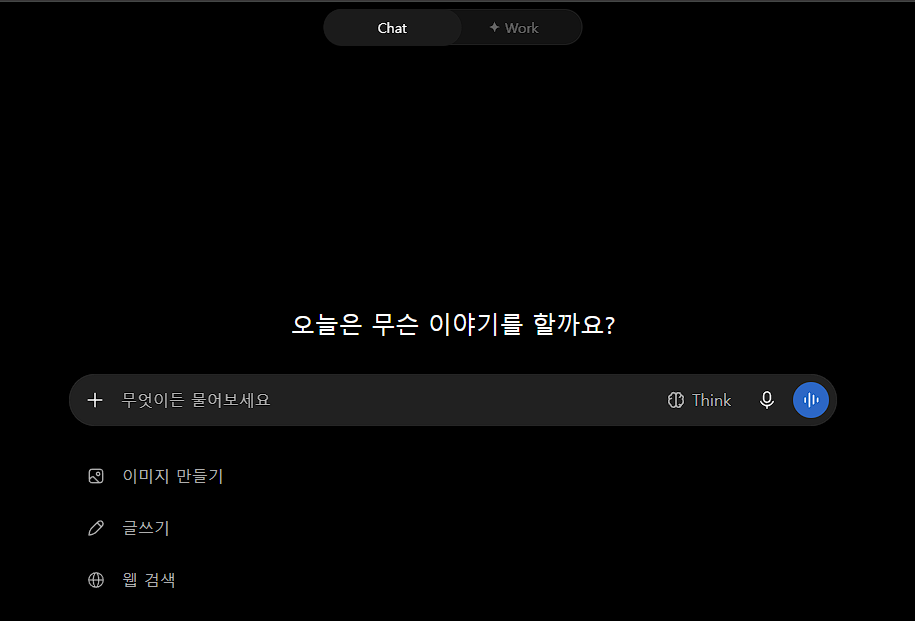
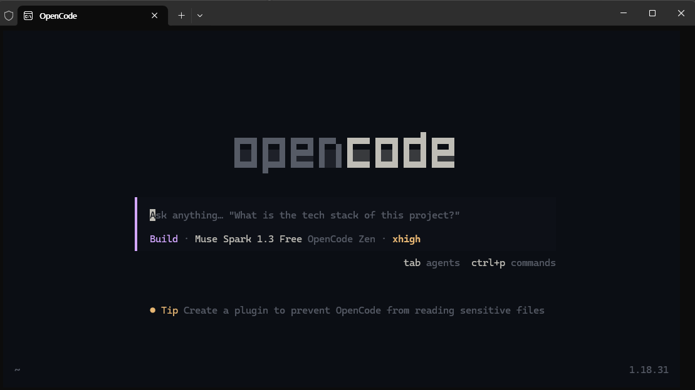
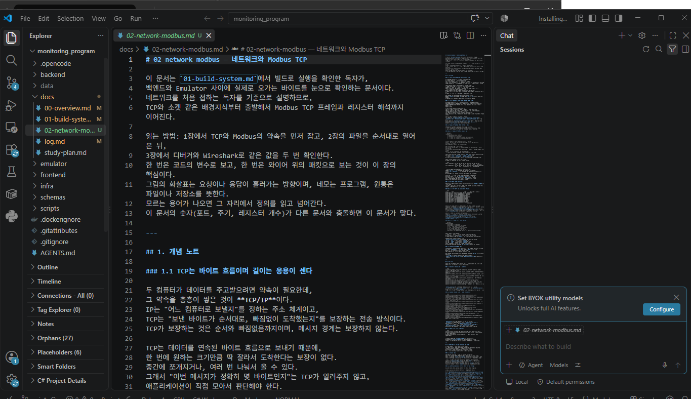
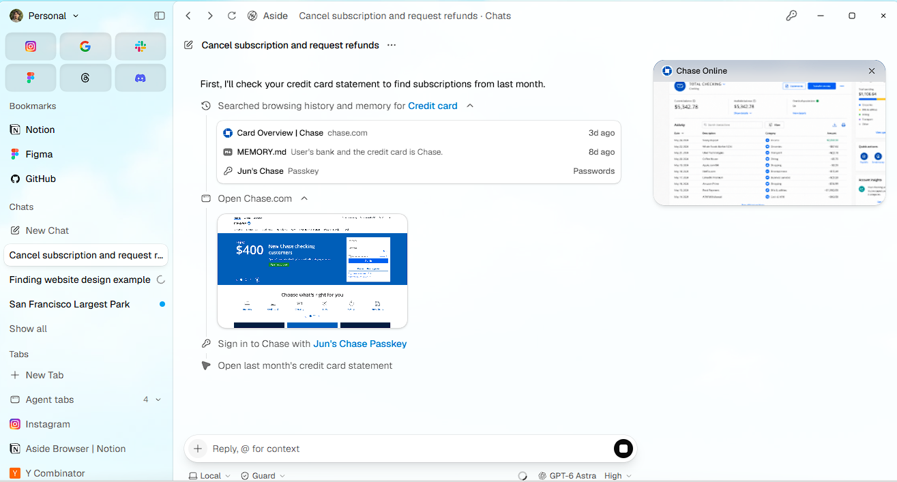
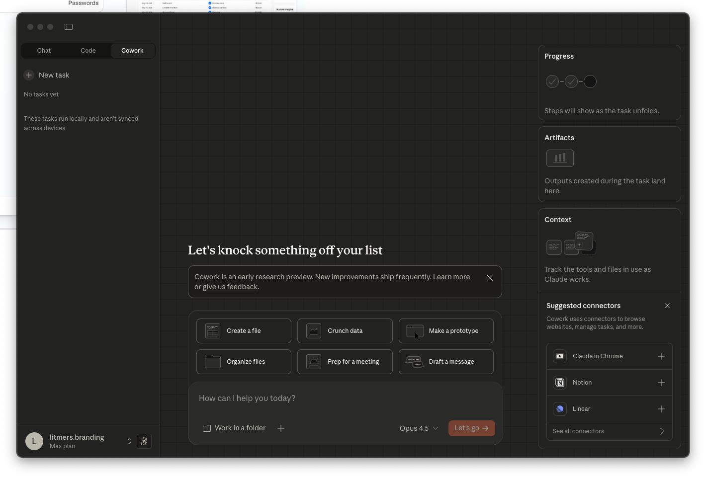
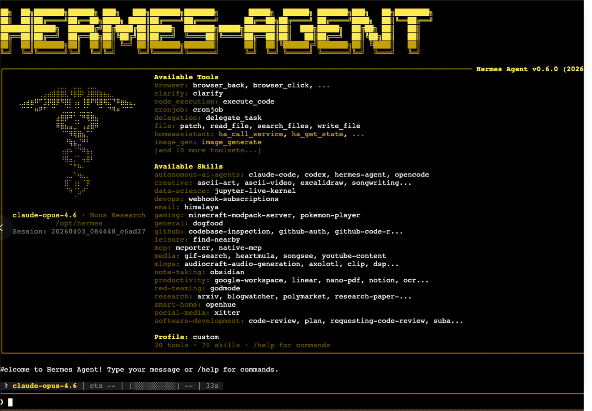
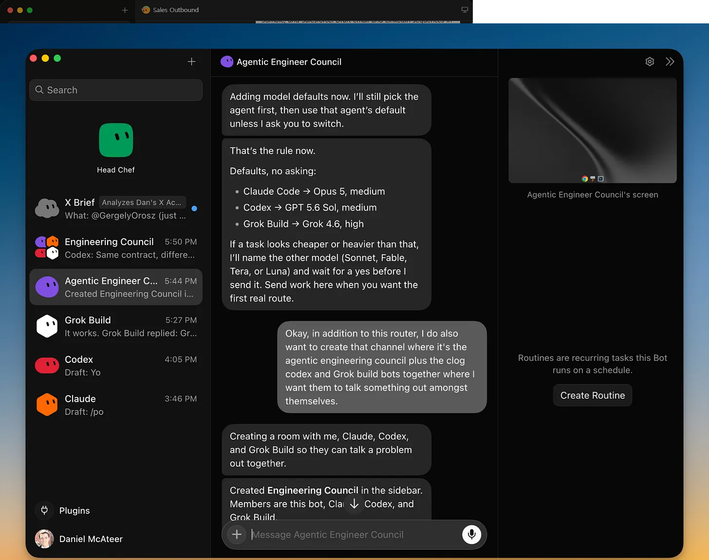

질문하면 답하고, 다음 질문을 하면 또 답하는 방식입니다. 글쓰기를 도와주거나, 아이디어를 같이 정리하거나, 코드 한 줄을 설명받는 데 적합합니다. 핵심은 사람이 계속 대화를 이어가야 진행된다는 점이에요. 결과물 자체보다 "대화하면서 생각을 정리하는 과정"이 목적에 가깝습니다.
Claude 화면 보기 ChatGPT 화면 보기ChatGPT, Claude Code, Cursor, OpenClaw… 이름은 다 다르지만 속을 들여다보면 GPT, Claude, Gemini, Grok 같은 몇 개 모델을 나눠 쓰고 있는 경우가 많습니다. 그런데도 완전히 다른 도구처럼 느껴지는 이유는, 모델을 감싸고 있는 틀이 다르기 때문이에요. 이 틀에 따라 어디서 말을 거는지, 얼마나 알아서 처리하는지, 실제 작업이 어디서 일어나는지가 달라집니다.
흔히 AI를 고를 때 "어떤 모델이 더 똑똑한가"만 따지는데, 실제로는 그 모델을 어떤 도구 위에서 쓰느냐가 결과를 더 크게 좌우할 때가 많습니다. 이 도구 하나하나는 보통 아래 다섯 가지로 만들어져요.
| 구성 요소 | ChatGPT일반 대화용 | Codex코딩 에이전트용 |
|---|---|---|
| 시스템 프롬프트 | 친절하게 대화를 돕는 어시스턴트로 행동하라는 지시 | 코드를 계획하고, 고치고, 테스트까지 확인하는 에이전트로 행동하라는 지시 |
| Tool | 웹 검색, 이미지 생성 등 범용 보조 도구 | 파일 읽기/쓰기, 셸 명령 실행, git 조작 같은 코드 전용 도구 |
| Context | 지금까지의 대화 내용 | 프로젝트의 파일 구조와 코드 전체 |
| 실행 환경 | 텍스트만 반환하는 제한된 샌드박스 | 실제 파일을 바꿀 수 있는 로컬/클라우드 환경 |
| Agent Loop | 한 번 답하고 다음 지시를 기다림 | 계획 → 실행 → 결과 확인 → 필요하면 재시도, 이 과정을 스스로 반복 |
| 구성 요소 | Chat | Claude Code | Cowork |
|---|---|---|---|
| 시스템 프롬프트 | 대화 상대로 행동 | 코드베이스를 다루는 에이전트로 행동 | 문서·파일을 다루는 에이전트로 행동 |
| Tool | 웹 검색 등 보조 도구 위주 | 셸, 파일 읽기/쓰기, 테스트 실행 | 문서·스프레드시트·폴더 조작 |
| Context | 대화 히스토리 | 코드 저장소 구조 | 내 컴퓨터의 파일과 폴더 |
| 실행 환경 | 없음 | 로컬 터미널 | 로컬 파일 시스템 + 앱 |
| Agent Loop | 매 턴 사람이 개입 | 계획을 보여주고 승인받으며 반복 | 목표만 받고 끝까지 알아서 반복 |
아래 세 가지가 다르면, 모델이 같아도 다른 도구가 됩니다.
채팅창인지, 터미널인지, 코드 에디터인지, 브라우저인지, 아니면 카톡 같은 메신저인지. 사람이 명령을 입력하는 자리가 다릅니다.
한 마디 할 때마다 확인받는지, 아니면 목표만 던져주면 끝까지 알아서 처리하고 결과만 가져오는지의 차이입니다.
내 컴퓨터의 셸에서 명령이 실행되는지, 클라우드에 따로 마련된 컴퓨터에서 도는지, 아니면 로그인해둔 웹사이트를 직접 조작하는지가 다릅니다.
세 기준 중에서도 "얼마나 맡기는가"가 체감 차이를 가장 크게 만듭니다. 아래 순서대로 하나씩 짚어볼게요.

질문하면 답하고, 다음 질문을 하면 또 답하는 방식입니다. 글쓰기를 도와주거나, 아이디어를 같이 정리하거나, 코드 한 줄을 설명받는 데 적합합니다. 핵심은 사람이 계속 대화를 이어가야 진행된다는 점이에요. 결과물 자체보다 "대화하면서 생각을 정리하는 과정"이 목적에 가깝습니다.
Claude 화면 보기 ChatGPT 화면 보기
코드베이스 전체를 읽고, 여러 파일을 한 번에 고치고, 터미널에서 테스트나 빌드 명령까지 직접 실행합니다. 실행해보고 에러가 나면 그걸 보고 스스로 다시 고치기도 해요. "코드를 물어보는" 게 아니라 "코드를 실제로 고치는" 수준의 작업이라, 대신 큰 변경을 하기 전에는 계획을 보여주고 진행 여부를 물어봅니다.

하는 일 자체는 CLI 에이전트와 비슷하지만, 결과를 텍스트 로그 대신 코드 변경 사항(diff)과 파일 구조로 눈으로 보면서 확인할 수 있습니다. 자동완성처럼 짧은 도움부터, "로그인 화면 하나 만들어줘" 같은 여러 파일에 걸친 작업까지 다룹니다. Google Antigravity는 여기서 한 발 더 나아가, 에이전트 여러 개를 동시에 띄워 각자 다른 작업을 맡기고 진행 상황만 관리하는 방식도 지원합니다.
Cursor 화면 보기 Google Antigravity 화면 보기
API 연동 없이도, 사람이 로그인해둔 사이트를 직접 클릭하고 입력하면서 일을 처리합니다. Aside 같은 경우는 확장 프로그램이 아니라 브라우저 자체가 통째로 에이전트라서, Gmail이든 사내 관리 도구든 로그인만 되어 있으면 손이 닿습니다. 작업 난이도에 따라 얼마나 깊게 생각하고 움직일지 단계를 고를 수도 있어요. 참고로 Aside는 한국인 3명이 창업한 팀이 만든 제품이기도 합니다.
Aside 소개 페이지 보기
코드가 아니라 문서, 스프레드시트, 폴더 정리 같은 사무 업무를 대신 맡기는 도구입니다. "이 자료들 취합해서 보고서로 만들어줘", "다운로드 폴더 좀 정리해줘" 같은 지시를 주면, 여러 파일을 오가며 하나의 결과물로 만들어 가져다줍니다. 개발자가 아닌 사람도 쓸 수 있도록 코딩 에이전트와 같은 엔진을 사무 업무에 맞게 감싼 형태예요.
Claude Cowork 화면 보기
앞선 도구들은 내가 앱을 켜야 작동하지만, 이 유형은 서버에 계속 떠 있다가 메시지가 오면 알아서 판단해서 움직입니다. 특정 회사 모델에 묶이지 않고 원하는 모델을 갈아 끼울 수 있는 것도 특징이에요. "내일 회의 전에 자료 정리해서 보내줘"라고 메신저로 시키면 알아서 처리하는 식입니다. 다만 계속 켜져 있고 권한도 많다 보니, 잘못된 지시나 외부 공격에 노출될 위험도 함께 따라옵니다.
OpenClaw 공식 사이트 보기
메신저 상주형과 비슷하게 계속 일하지만, 차이는 자기 컴퓨터를 따로 갖고 있다는 점입니다. 사람처럼 이메일이나 업무 툴에 직접 로그인해서 일을 처리하고요. "영업 Bot", "버그 재현 Bot"처럼 역할을 나눠 여러 개를 동시에 돌릴 수 있어서, 밤새 일을 시켜두고 아침에 결과만 확인하는 식으로도 쓸 수 있습니다.
Grok Bot 소개 페이지 보기